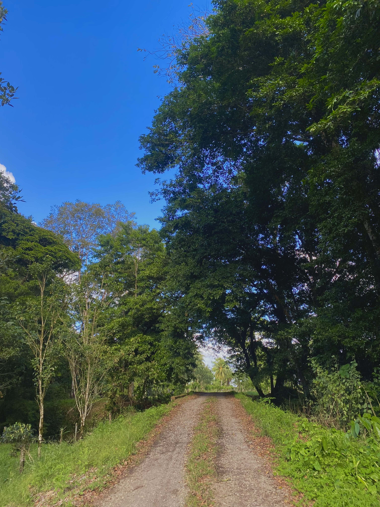
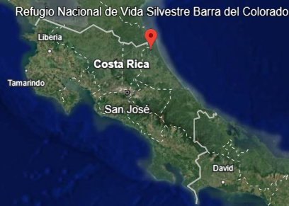

Linda Vista es un pequeño pueblo en la provincia de Limon, muy lejos de las zonas urbanas. La mayor parte de su poblacion esta conformada por agricultores y ganaderos . Siendo su principal fuente de ingresos
Siendo uno de los principales sitios para el avistamiento de aves del caribe costarricense y de observación de flora y fauna.

Haz clic aquí para más información
El RNVS Barra del Colorado fue creado en el año de 1985, mediante Decreto Ejecutivo Nº16358-MAG. Sus límites fueron modificados por decreto ejecutivo Nº31804-MINAE el 4 de mayo del 2004.Caracteristicas del lugar
Lista de actividades
- Ruta de los huevos
- Cabalgatas
- Pesca
- Mejengas
- Expoferias
- Turnos
Ocupaciones principales
- Ganaderos
- Agricultores
- Comerciantes
- Emprendedores
Tabla
| Nombre | Habitantes | Distancia |
|---|---|---|
| Las Palmitas | 400 | 19 km |
| Cariari | 300 mil | 25 km |
| Guapiles | 92 mil | 54 km |
Otra de las caracteristicas de la zona es que no cuentan con servicio de agua(AyA u otras) y ciertas zonas del lugar tampoco cuentan con servicio electrico.
El agua utilizada proviene principalmente de nacientes en la montaña y de pozos, aunque estos no son muy comunes. Las zonas sin electricidad, utilizan plantas electricas o paneles solares.
Para evitar cotaminacion y enfermedades, voluntarios extrangeros y universidades hacen estudios en busqueda de CO23- y/o NO_3, el ultimo estudio fue realizado
Linda Vista es una reserva biologica de vida silvestre por lo que esta rodeada de arboles y bosques, por lo que es comun comer todo tipo de comidas, frutas, vegetales y carnes proveniente de los alrededores.

Presiona Ctrl + C para copiar.
- Escuela Caño Zapota
- Centro educativo de la zona que cuenta solo con dos aulas y un profesor que se encarga de dar clase a todos los niños desde primero a sexto de la escuela. La poblacion estimada es de aproximadamente 100 personas. Solo cuenta con una escuela a la cual la cantidad de niños promedio que asisten cada año es de maximo 12.
Sin embargo, debido a la ganaderia, más de 200K arboles han sido talados ilegalmente, edstruyendo la flora y fauna del lugar
Evitemos la Fragmentación del Hábitat
Mapa Interactivo - Barra del Colorado
Multimedia
Videos
Audio
Canvas
Citas
"No podemos realmente amenazar la Tierra. Siempre sobrevivirá. Lo que estamos amenazando es nuestra supervivencia" - Margaret Atwood
Este texto es citado de El cuento de la criada.
Henry David Thoreau dijo: "En la naturaleza está la preservación del mundo."
Apoyemos la
Conservacion de
las reservas biologicas
Para mostrar un mensaje en consola, utiliza: console.log('Fauna');